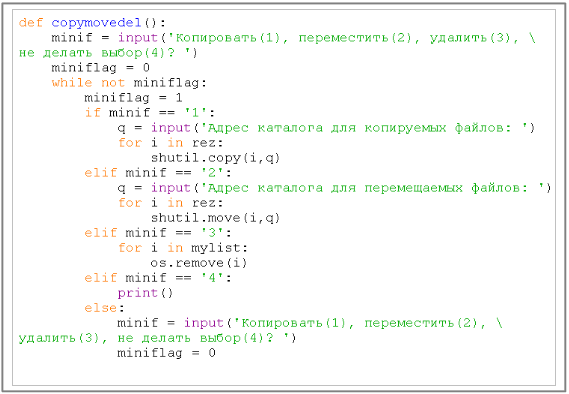

Описание проекта "Исследование возможностей языка программирования Python по управлению данными"
1 Цели и задачи работы
Одной из задач системного администратора является управление данными. Под данными в данном случае мы будем понимать файловые каталоги. При администрировании данных бывают ситуации, когда необходимо так или иначе обработать большую группу файлов: скопировать, переместить, создать резервную копию, сжать данные или даже внести изменения в имена определенной группы файлов (например, изменить расширение). Часто эти задачи предваряют поиск файлов по определённым признакам.
Обычно системные администраторы сами пишут небольшие программы (скрипты, сценарии) для работы с данными. В этом случае ими используются различные языки программирования мы предполагаем что чаще всего используются скриптовые языки. Например, в операционных системах, основанных на ядре Линукс, системные администраторы пишут небольшие скрипты на языке оболочки Bash. В интерпретируемые программы легче вносит изменения, чем компилируемые. А обычно это и требуется. У администраторов может быть много мелких различных задач, которые относительно легко решаются небольшими самодельными «программками».
С недавних пор в Интернете и литературе появилось большое количество публикаций об использовании языка программирования Python (Питон) в администрировании данными и управлении компьютерными сетями. Вообще Python широко используется в технологиях. Например, известно, что он нашёл широкое применение в компании Google.
С помощью стандартной библиотеки языка Python можно делать большое количество разнообразных действий по управлению данными. Преимуществом стандартной библиотеки языка Python можно выполнить большое количество разнообразных действий по управлению данными. Кроме того, сценарии на Python будут работать фактически в любой операционной системе, где установлен интерпретатор. Python – кроссплатформенный язык программирования.
Целью нашей работы было 1) изучить возможности и инструменты языка программирования Python по управлению файлами и 2) самостоятельно разработать программный модуль, выполняющий определённые задачи, в результате 3) оценить возможности языка для быстрой разработки небольших программ, решающих задачи управления данными.
Под определёнными задачами мы будем понимать копирование, перемещение, удаление и др. действия над файлами, которые предварительно были найдены по признакам: имени файла, его размера, дате создания (открытия, изменения). В итоге планируется создать небольшую программу, позволяющая сортировать и переименовывать файлы заданного дерева каталога, а также выполнять ряд других задач.
Для тестирования было создано дерево каталогов с различными фалами [Приложение 1]. Это сделано по той причине, что просматривать и осуществлять манипуляции с действительно важными файлами и каталогами было бы опасно.
2 Стандартные модули языка программирования Python
2.1 Модуль OS
Модуль os предоставляет ряд функций позволяющий взаимодействовать с операционной системой. Этот модуль содержит огромное количество функции, например, для работы с файловой системой. Интересна функция walk модуля os. В качестве параметра она принимает адресный путь и возвращает сложный объект, содержащий кортежи списков, файлов, подкаталогов и адресов. Ещё одной функцией, которую мы использовали в данной работе, является функцией join. Она позволяет объединить один или более путевых компонентов, например, из функции walk мы можем получить имя файла с одной стороны, и полный адрес каталога с другой. Функция join позволяет, нам объединить эти компоненты и получить полный адрес файла. В результате мы можем получить полный адрес любого файла.
Также нам потребуется из подмодуля os.path следующие три функции: getctime – позволяет получить время создания файла (появление адреса); getatime – дата последнего доступа (открытия файла); getmtime – дата модификации (изменения файла).
2.2 Модуль shutil, fnmatch, datetime
Из модуля shutil мы использовали функции копирования, удаления и перемещения файлов (copy, move, remove).
Модуль fnmatch — позволяет нам сопоставлять имена файлов с шаблоном. Использование шаблона стандартно: «звёздочка» обозначает любую группу файлов, а например, «вопросительный знак» обозначает одиночный символ. Функция fnmatch принимает два параметра: имя файла и шаблон, с которым его надо сверить. Если имя файла соответствует шаблону, то функция возвращает True, если нет – то False.
Возможности модуля datetime требуются для того чтобы обработать выдачу функции getctime (getmtime, getatime ). Эти функции возвращают дату в секундах, а datetime позволяет нам преобразовать дату в приемлемый формат. Все эти функции принимают в качестве аргумента адрес файла и возвращают дату в виде одного числа, выраженного в секундах с начала эпохи.
3 Разработка функций
3.1 Создание списка файлов
Функция pathfile [Приложение 2] составляет список полных адресов файлов, переданного ей в качестве аргумента дерева каталога.

Описание алгоритма. Переменной path_f сначала присваивается пустой список. В нём будут храниться полные адреса файлов, далее используется сложная конструкция, состоящая из двух циклов for, где один цикл вложен в другой. Во внешнем цикле вызывается функция os.walk и формируется объекты, содержащие список полных адресов подкаталогов и имён файлов. Внутренний цикл for, по отношению к каждому имени файла производит два действия: формирует его полный адрес с помощью функции os.path.join и добавляет получившийся полный адрес в список (path_f). В конце функция pathfile возвращает список адресов файлов.
3.2 Поиск файлов по шаблону
Разработанная нами функция surchfile, является расширение описанной ранее функцией pathfile [Приложение 2]. Здесь добавлена проверка условия (if) на соответствие имени файла заданному шаблону. Для этого используются возможности модуля fnmatch.
Функция поиска файла по шаблону (surchfile) принимает два аргумента: адрес просматриваемого каталога и шаблон, а возвращает список полных имён файлов, находящихся в каталоге, его подкаталогах, которые соответствуют заданному шаблону.
3.3 Поиск файлов по размеру
Функция filesize принимает три аргумента: адрес каталога, символ “>” или “<”, размер в килобайтах [Приложение 2]. В функции sizefile по мимо прочего, мы получаем размер файла в байтах с помощью стандартной функций os.path.getsize и переводим его в килобайты, поделив на 1024. Далее в зависимости от переданного пользователем символа (“>” или “<”), полученный размер файла сравнивается с, указанным в аргументах. Файл добавляется в список лишь в том случае, если его размер больше или меньше указанного пользователем.
3.4 Поиск файлов по диапазону размера
В отличие от предыдущей функции, здесь пользователь должен указать пределы размера искомых файлов. Функция sizefile2 также принимает три аргумента, только вместо символов “>” или “<” и одного размера, ей передаётся верхняя и нижняя границы диапазона (в кб) [Приложение 2].
3.5 Поиск файла по дате (просмотра, открытия и изменения)
Функция timefile принимает четыре аргумента: адрес каталога, «дата от…» и «дата до…», признак (просмотр файла, его открытие или изменение) [Приложение 3].

При разработке функции timefile мы столкнулись с проблемой написания алгоритма, который корректно сравнивал бы две даты. Во первых дело в том, что пользователь передаёт функции даты в определённом формате, и они принимаются как строки. Для решения этой проблемы нами была написана функция listcreat [Приложение 4], которая преобразует строку в список натуральных чисел: день, месяц, год. Во вторых, как сравнить две даты? Был разработан алгоритм, в котором сначала выясняется лежит ли год обрабатываемого в даны момент файла в диапазоне годов дат, переданных пользователю. Если это так то больше ничего проверять не надо, и файл добавляется в список path_f. Во всех остальных случаях, когда год конкретного файла совпадает с той или иной границей указанной пользователем, вычисляется количество дней, от начала года, и затем производится сравнение. Для вычисления количества дней прошедших, сначала года, нами была разработана функция quantitydays [Приложение 4]. В качестве аргумента она принимает дату в виде списка и возвращает число прошедших дней от начала года. Также функция timefile, усложнена тем, что поиск может производиться по трём характеристикам: создание, изменение и открытие файла.
3.6 Функция выбора действия: копирование, перемещение и удаление файлов
Разработанная нами программа пока может выполнять над файлами лишь три действия: копировать, перемещать и удалять. Для их реализации была создана отдельная функция copymovede1. В ней в зависимости от выбора пользователя осуществлялись соответствующие действия за счёт функции copy и move из модуля shutil и функции remove модуля os. Также предусмотрен вариант, когда пользователь вообще может отказаться от действий.

4 Разработка интерфейса программы
Полученные нами функции могут найти практическое применение в качестве модуля языка программирования Python. Модуль импортируется в программу, а их содержимое можно использовать. Однако, если мы хотим получить полноценную программу требуется создать пользовательский интерфейс, который может быть, как текстовым, так и графическим. Так как мы позиционируем нашу программу для решения административных задач, и по идее пользоваться ей должны системные администраторы, может быть вполне достаточно текстового интерфейса. В этом случае будет происходить диалог программы с пользователем. В зависимости от ответов пользователя программа будет вести себя тем, или иным образом.
Была реализована следующая логика. Пользователю предлагается выбрать из списка возможных действий [Приложение 6]. Эти действия соответствуют созданным функциям: возможность поиска по имени, размеру (“>” или “<”), диапазону размеров («от…» и « до…») в кб, времени (открытия, создания, изменения). Далее происходит обработка ответа пользователя с помощью конструкции if-elif-else [Приложение 7]. В каждой ветви этой конструкции пользователю задаются те вопросы, ответы на которые служат входными аргументами функций. Так например, если пользователь выбрал поиск файлов в определённому диапазону размеров, то ему будут заданы вопросы об адресе каталога, где требуется осуществить поиск, о размере («от…» и « до…»). После чего вызываются лишь те функции, которые нужны в данной ситуации.
5 Результат и дальнейшие развитие работы
На данный момент разработки, полученная программа может копировать, перемещать и удалять файлы, из указанного дерева каталога, предварительно просмотрев его, и составив список, удовлетворяющего запросу: шаблон имени, размер и дата файла.
Несмотря на то, что программа является вполне рабочей, в ней по большей части не осуществлена обработка ошибок ввода пользователя. Например, если пользователь укажет адрес каталога, в неправильном формате, то программа выдаст ошибку, хотя по идеи должна сообщать о некорректности ввода. На данном этапе мы целенаправленно опустили обработку ошибок, с тем, чтобы оставить программу ясной и наглядной, так как планируется в дальнейшем её усовершенствовать и вносить дополнительные возможности. Например, с помощью языка программирования Python можно осуществить массовое переименование файлов и даже их архивирование. Также планируется добавить возможность вывода полученного списка файлов в файл, подсчёта их количества и, возможно, вычисления общего размера найденных файлов.
В результате можно сделать вывод, что Python является хорошим инструментом для создания небольших программ, выполняющих различные действия над данными. Большой набор стандартных модулей увеличивает скорость разработки программы, а краткость и ясность языка делают их простыми и наглядными.
Литература
- Н. Гифт, Д. М. Джонс «Python в системном администрировании». СПб.: Символ-Плюс, 2009
- М. Лутц «Изучаем Python». СПб.: Символ-Плюс, 2008
- М. Саммерфилд «Программирование на Python 3». СПб.: Символ-Плюс, 2009
- А. Н. Чаплыгин «Учимся программировать вместе с Python», pdf